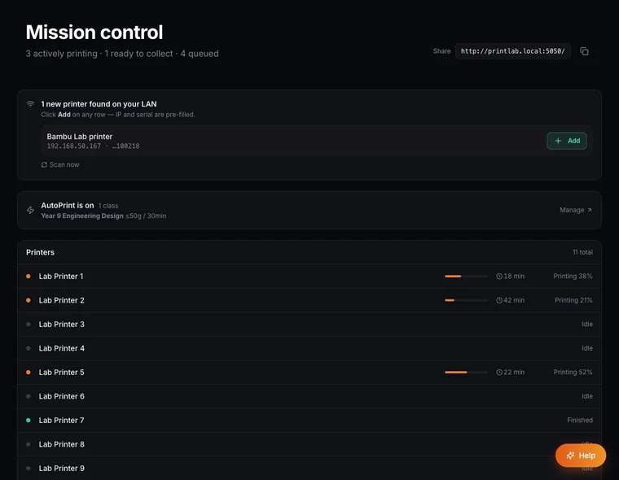
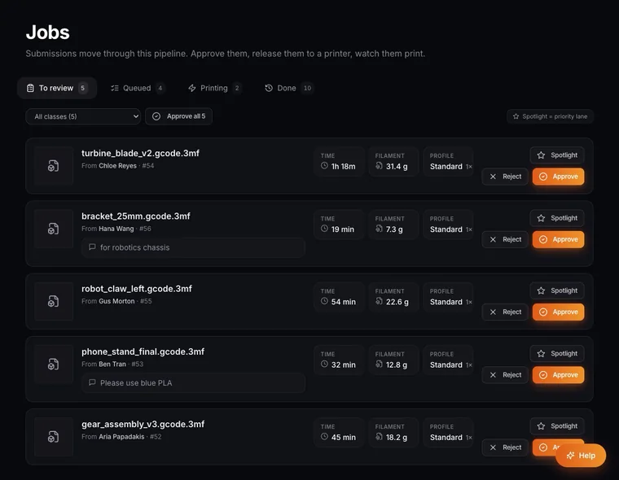
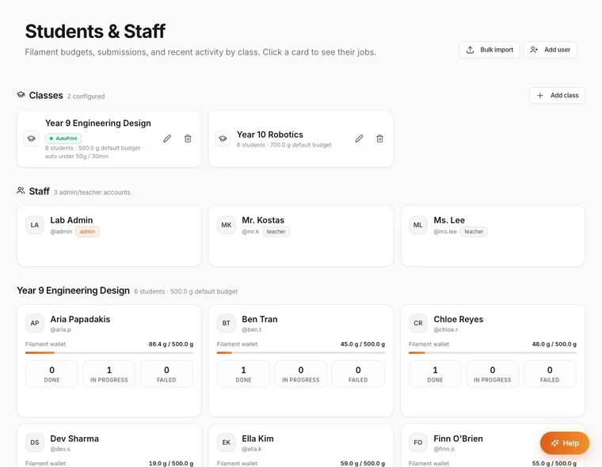
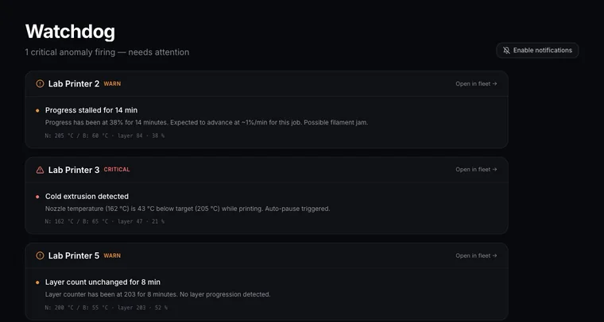

← All projects
PrintLab3D
Runs a school's fleet of 3D printers: students submit, teachers approve, and the printers stay busy.
No sign-in. Made-up data and sample AI responses. Opens in a new tab.
Designed and built independently, outside my school roles. Demonstrations use made-up data and sample AI responses.


The classroom problem
Ten to fifteen printers shared by up to a hundred students a term quickly turns into spreadsheets, group chats and failed prints that nobody notices.
What it does
- Students submit their print files; the teacher sees the time and filament each one needs and approves, rejects or prioritises it.
- Each student and class has a filament budget.
- Small jobs can print automatically within limits the teacher sets.
- A watchdog spots failing prints and pauses them, with bookings and an audit log.
Where AI fits
Very little, by design. The approval limits and the watchdog follow rules the teacher sets, so the system is predictable. An optional help chat can answer questions about using it.
A closer look
Select a screenshot to see it in a larger view.





